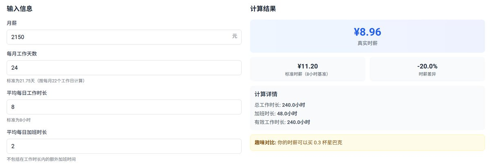

時璃風医詩🌈🏳️🌈
@hagishigure
你会发现，学形而上学的在中国连哲学教师的职位都找不到。因为中国的教育體系根本不会涉及哲学。
所以中国出身的后现代形而上学或性别研究PhD在国际是很受欢迎的，Ta们往往能发掘中文语境的独特叙事。

Hiryuu Concordea
@Abs0lutHydra
算了下读博的收入
（包括了所有收入，包括助研费奖学金课题组补助等等
24天/8h+2h是一个保守的假设 一般情况下是随时待命的
读博能成功地通过大量脑力劳动让你精疲力竭 让你只能被拴在这个体系里当牛马
想去家教？你还记得初高中知识？你还有时间备课？
想干便利店员/摇奶茶之类的？你有时间？ https://t.co/uMQ55S9OTj